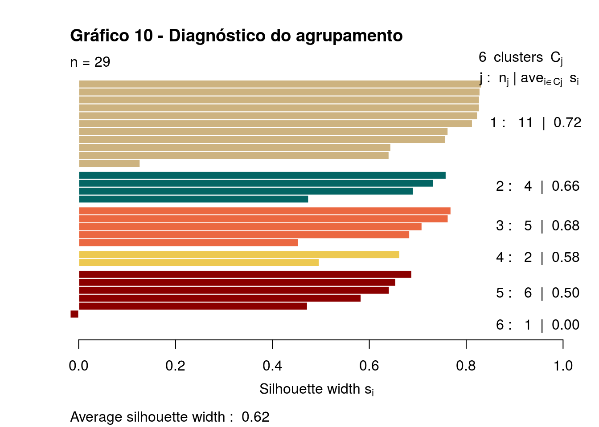

Ítalo Batista


library(tidyr)
library(dplyr)
library(ggplot2)
library(readr)
library(tidyverse, warn.conflicts = F)
library(rvest)
library(plotly)
library(cluster)
library(ggdendro)
library(here)
theme_set(theme_light())
source(here::here("source_scripts/plota_solucoes_hclust.R"))Esta análise, realizada no contexto da disciplina Análise de Dados 1 (Computação @ UFCG), tem por objetivo identificar agrupamentos sob características de Bilheteria e Avaliação dos filmes nos quais a atriz Cate Blanchett atuou. Essa análise serve de mote para trabalharmos com algumas técnicas de agrupamento hierárquico.
Os dados sobre a atriz que iremos coletar são do site Rotten Tomatoes.
from_page <- read_html("https://www.rottentomatoes.com/celebrity/cate_blanchett") %>%
html_node("#filmographyTbl") %>%
html_table(fill=TRUE) %>% # Faz parse
as.tibble()
filmes = from_page %>%
filter(RATING != "No Score Yet",
`BOX OFFICE` != "—",
CREDIT != "Executive Producer") %>%
mutate(RATING = as.numeric(gsub("%", "", RATING)),
`BOX OFFICE` = as.numeric(gsub("[$|M]", "", `BOX OFFICE`))) %>%
filter(`BOX OFFICE` >= 1) # Tem dois filmes que não parecem ter sido lançados no mundo todoVamos inicialmente entender a estrutura dos dados:
filmes %>% head()## # A tibble: 6 x 5
## RATING TITLE CREDIT `BOX OFFICE` YEAR
## <dbl> <chr> <chr> <dbl> <int>
## 1 92.0 Thor: Ragnarok Hela 315 2017
## 2 95.0 Carol Carol Aird 8.60 2015
## 3 62.0 Truth Mary Mapes 1.60 2015
## 4 83.0 Cinderella The Wicked Step… 183 2015
## 5 59.0 The Hobbit: The Battle of th… Galadriel 188 2014
## 6 91.0 How to Train Your Dragon 2 Valka 147 2014Cada observação é um filme, que possui uma avaliação (entre 0 e 100), o título do filme, o nome do papel que Cate Blanchett atuou, a bilheteria do filme e o ano de lançamento.
Nesta análise, estaremos interessados em identificar grupos entre esses filmes sob as variáveis rating e box office (grupos de duas dimensões). Nesse sentido, vamos ver como essas variáveis se comportam.
Vamos visualizar os dados para Rating.
filmes %>%
ggplot(aes(x = "Filmes", y = RATING)) +
geom_jitter(width = .02, height = 0, size = 2, alpha = .6, color="#EB6841") +
theme(plot.title = element_text(hjust = 0.5)) +
labs(title="Gráfico 01 - Comportamento da var Rating (Avaliação)", x= element_blank())Visualmente, os filmes estão bem dispersos rem relação à sua avaliação, porém com alguns pequenos grupos (filmes que possuem rating próximos).
Repetindo o processo para a variávei Box Office (tr: Bilheteria).
filmes %>%
ggplot(aes(x = "Filmes", y = `BOX OFFICE`)) +
geom_jitter(width = .02, height = 0, size = 2, alpha = .6, color="#036564") +
theme(plot.title = element_text(hjust = 0.5)) +
labs(title="Gráfico 02 - Comportamento da var Box Office (bliheteria)", x= element_blank())
Aqui, os dados estão um pouco menos dispersos, com alguns grupos mais definidos.
Agora, vamos utilizar algumas técnicas de agrupamento hierárquico de duas dimensões para identificar grupos de filmes definidos sob as características Rating e Box Office.
Primeiro, vamos entender como se comportam segundo essas duas variáveis juntas!
filmes %>%
ggplot(aes(x = RATING, y = `BOX OFFICE`, label = TITLE)) +
geom_point(color="#EDC951", size=4, alpha=0.8) +
theme(plot.title = element_text(hjust = 0.5)) +
labs(title="Gráfico 03 - Comportamento das vars Box Office e Rating juntas",
x="Avaliação do filme", y="Bilheteria do filme")Como vemos, os dados de bilheteria variam bastante (eixo vertical), deixando os pontos dispersos. Nesse sentido, vamos aplicar a função log aos dados de bilheteria, de modo que essa alta variação em bilheteria tenha pouca influência quando formos identificar grupos de filmes.
filmes %>%
ggplot(aes(x=RATING, y=`BOX OFFICE`, label = TITLE)) +
geom_point(color="purple", size=4, alpha=0.8) +
scale_y_log10() +
theme(plot.title = element_text(hjust = 0.5)) +
labs(title="Gráfico 04 - Comportamento das vars Box Office e Rating juntas",
x="Avaliação do filme", y="Bilheteria do filme")filmes_scale = filmes %>% mutate(`BOX OFFICE` = log10(`BOX OFFICE`))Calculando os grupos:
agrupamento_h_2d_complete = filmes_scale %>%
column_to_rownames("TITLE") %>%
dist(method = "euclidean") %>%
hclust(method = "complete")Note que estamos utilizando log de Box Office. Note também que estamos utilizando o método euclidiano na função dist(). Esta função calcula distâncias e retorna uma matriz de distâncias. O argumento do método especifica a métrica de distância a ser usada. Outro método que poderia ser utilizado é o “manhattan”, mas usualmente se usa o euclidiano. Ainda no trecho de código acima, logo após calcular a distância, nós fazemos um agrupamento hierárquico (note a função hclust()). Para isso, estamos utilizando o método “complete”. Outros métodos que poderiam ser utilizados são “ward.D2”, “average”, “centroid”, “single”, dentre outros. A escolha do método define o critério de vinculação.
Vamos plotar o dendograma sobre esses dados agrupados:
ggdendrogram(agrupamento_h_2d_complete, rotate = TRUE) +
labs(title="Gráfico 05 - Agrupamento (complete)")Para vias de comparação, vamos plotar dendogramas utilizando outros métodos de vinculação (average e single).
agrupamento_h_2d_average = filmes_scale %>%
column_to_rownames("TITLE") %>%
select(RATING, `BOX OFFICE`) %>%
dist(method = "euclidean") %>%
hclust(method = "average")
ggdendrogram(agrupamento_h_2d_average, rotate = TRUE) +
labs(title="Gráfico 06 - Agrupamento (average)")agrupamento_h_2d_single = filmes_scale %>%
column_to_rownames("TITLE") %>%
dist(method = "euclidean") %>%
hclust(method = "single")
ggdendrogram(agrupamento_h_2d_single, rotate = TRUE) +
labs(title="Gráfico 07 - Agrupamento (single)")Ao longo desta análise, vamos utilizar o agrupamento pelo método average, pois nele a distância entre dois grupos é definida como a média entre cada ponto de um cluster para cada ponto do outor. No método complete, a distância entre dois grupos é definida como a maior distância entre dois pontos de grupos diferentes. E, no método single, como a menor distância.
agrupamento_h_2d = agrupamento_h_2d_averageNo gráfico abaixo, analisamos a dissimilaridade dos agrupamentos em função do número de grupos que se deseja ter. Vemos que há uma grade (a maior) diferença entre os pontos 1 e 2, como esperado, pois se todos os dados formam um só grupo, esse grupo tende a ser bem dissimilar. A diferença entre ter 2 ou 3 grupos também é bastante significativa. A partir de 5 grupos, a dissimilaridade passa a variar menos. Nesse sentido, se quiséssemos formar a partir 5 grupos de filmes, cada grupo tenderia a ser mais homogênio entre si.
data.frame(k = NROW(agrupamento_h_2d$height):1,
height = agrupamento_h_2d$height) %>%
ggplot(aes(x = k, y = height)) +
geom_line(colour = "grey") +
geom_point() +
theme(plot.title = element_text(hjust = 0.5)) +
labs(x = "Número de clusters produzido", y = "Dissimilaridade na junção",
title="Gráfico 08 - Dissimilaridade em função de número de grupos")
Contudo, para termos mais informações, vamos trabalhar com até 6 grupos nesta análise.
plota_hclusts_2d(agrupamento_h_2d,
filmes_scale,
c("RATING", "`BOX OFFICE`"),
linkage_method = "average", ks = 1:6) + scale_y_log10() +
theme(plot.title = element_text(hjust = 0.5)) +
labs(title="Gráfico 09 - Grupos de filmes")Percebemos que quando há cinco ou mais grupos, há um ponto que constitui um único grupo. Vamos plotar um gráfico silhueta para identificar a qualidade do agrupamento.
distancias = filmes_scale %>%
column_to_rownames("TITLE") %>%
select(RATING, `BOX OFFICE`) %>%
#mutate(`BOX OFFICE` = log10(`BOX OFFICE`)) %>%
#mutate_all(funs(scale)) %>%
dist(method = "euclidean")
plot(
silhouette(cutree(agrupamento_h_2d, k = 6), distancias),
col=c("#CDB380", "#036564", "#EB6841", "#EDC951", "darkred", "pink"),
main="Gráfico 10 - Diagnóstico do agrupamento",
yaxt='n', ann=FALSE)
Como nenhuma barra horizontal cresce para o lado negativo, então nenhum grupo (diferenciados pelas cores) tem pontos que se aproximam mais de outros grupos do que do seu próprio. Os clusters foram bem definidos.
E se normalizarmos os dados?
agrupamento_scale = filmes
agrupamento_scale$RATING = scale(filmes$RATING)
agrupamento_scale$`BOX OFFICE` = scale(filmes$`BOX OFFICE`)
agrupamento_scale_h_2d = agrupamento_scale %>%
column_to_rownames("TITLE") %>%
select(RATING, `BOX OFFICE`) %>%
dist(method = "euclidean") %>%
hclust(method = "average")
cluster_complete <- cutree(agrupamento_scale_h_2d, k=6)
plot(agrupamento_scale %>% select(RATING, `BOX OFFICE`), col=cluster_complete, main="Gráfico 11 - Identificando grupos de filmes")Vamos identificar alguns desses grupos.
Do conjunto de 28 filmes, há um grupo de três, os identificados por rosa, que são os que possuem a maior bilheteria e a melhor avaliação. Sem muito receio, é possível afirmar que esses filmes representam a trilogia O Senhor dos Aneis, que, como se sabe, teve uma da maiores bilheterias recentes e foi sucesso de público e de crítica.
Há outro grupo, identificado pela cor preta, de filmes que foram sucesso de crítica mas tiveram bilheteria muito abaixo da trilogia. Teriam sido filmes mais cults? Nesse meio, estão os excelentes filmes “I’m not there”, em que Cate Blanchett fez uma incrível interpretação do poeta americano Bob Dylan. Contudo, esse filme teve uma baixa bilheteria.
Há um grupo também dos filmes de baixa bilheteria e de crítica. São os três identificados por azul. Dentres esses filmes, está “Elizabeth: The Golden Age”, continuação do filme Elizabeth, de 1998, que rendeu indicação ao oscar de melhor atriz principal. Contudo, sua continuação não teve boa recepção.
Vamos falar de um último grupo, o identificado por azul escuro, que representam filmes que até tiveram boa bilheteria (o público gostou), mas que não ganharam os críticos, pois têm avaliação mediana. Dentre esses filmes, estão alguns da trilogia The Hobbit, que pegou carona no sucesso da trilogia O Senhor dos Aneis, mas não teve boa recepção dos críticos.
Material de apoio usado: